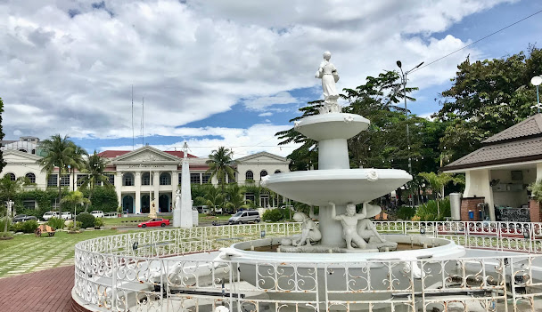

Aurora Park
Aurora Park is situated at the center surrounded by the St. William Cathedral Church, Laoag City Hall, Marcos Hall of Justice, Ilocos Norte Provincial Capitol and the Sinking Bell Tower. The plaza was called Plaza de Alfonso XII after the King of Spain. In the same plaza, there is a multi-tiered obelisk erected in 1881, dedicated to the Spanish King Alfonso XII for terminating the Tobacco Monopoly. Today, the Obelisk still stands and had defied deterioration through the passing of the time. The plaza is now called Aurora Park, on the center is where the Statue of Maiden Pamulinawen is strategically placed on top of the fountain. According to historical records, before the end of the 16th century, Plaza de Alfonso XII marks the center of community of Laoag. It where the early Laoageños resettled after the missionaries moved the center from Ermita Hill to the plaza. Following the gridiron pattern of Greco-Roman origin in laying out towns, they have laid down the center of the rectangle where the location of the plaza, church, convent, tower, the casa tribunal, and other important edifices were indicated. These were followed by the laying of rectangular street blocks. The laying out of the poblacion done, the indegenous population was prevailed upon to construct their houses in proper places within the reach of the church bells.